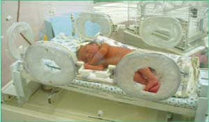

|
Каждый знает, что любое серьезное дело требует подготовки. Рождение ребенка - как раз тот самый случай, утверждают специалисты.
Никакой государственной программы подготовки к родам, увы, не существует, и будущие мамы предоставлены в этом вопросе самим себе. Зато спектр услуг, которые оказывают беременным женщинам частные заведения (центры родительской культуры, клиники и фитнес - клубы), впечатляет, будущая мама сможет найти программу по вкусу. Выбирать вы сможете между традиционным и альтернативным подходом к подготовке, а дальше останется только найти школу, чья программа основана на одном из этих принципов. Не забудьте поинтересоваться, есть ли у заведения лицензия на этот вид деятельности.
Итак, если вы задались целью вооружиться знаниями о том, что происходит с вами и вашим малышом в течение беременности и нескольких часов родов, наберитесь терпения и внимательно изучите все предложения. Определившись, обсудите свой выбор с врачом, он расскажет, чем вам можно занимался, а с чем быть поосторожнее. Возможно, доктор посоветует вам, какую школу лучше посещать. Если вам понравились несколько методик, все же постарайтесь выбрать какую-то одну, иначе обилие преподавателей и информации может запутать вас. А еще учитывайте свои интересы. Например, будущей маме, которая стремится получить как можно больше практических советов, скорее подойдут подготовительные занятия под руководством врача-акушера. Тем же, кто любит совершенствовать свое тело и занимается спортом, лучше отправиться в фитнес - клуб.
ОБРАТИТЕ ВНИМАНИЕ! Какой бы ни была приглянувшаяся вам методика, она обязательно должна включать в себя упражнения для тренировки мышц малого таза и дыхания. А теперь давайте посмотрим, из чего же нам предстоит выбирать.
Традиции подготовки
В их основе лежит метод психопрофилактической подготовки, который был предложен в 1950 году советскими учеными И. 3. Вельвовским и К. И. Платоновым. Раньше эти занятия проводились в каждой женской консультации, и все будущие мамы должны были их посещать. К сожалению, с середины 80-х они больше не практикуются. Суть метода - помочь беременной женщине избавиться от страха перед родовыми болями и родами и научить ее активно в них участвовать. Его создатели рассуждали так: слишком часто мысль о рождении ребенка ассоциируется у женщины со страданиями, поэтому во время родов она может быть тревожна и напряжена. Страх приводит к выбросу в кровь гормона адреналина, который ослабляет родовую деятельность, в то время как знания, полученные на занятиях, способны помочь будущей маме воспринимать предстоящие роды не так драматично, а значит, ничто не будет препятствовать выработке в ее организме гормона радости - эндорфина, улучшающего родовую деятельность и обезболивающего роды.
Позже, в 1970 году, эта методика была усовершенствована французским акушером Фернаном Лимазом, который предложил включить в программу дыхательные и релаксационные упражнения.
Если вы захотите воспользоваться услугами частных подготовительных центров, не забудьте поинтересоваться, есть ли у них лицензия.
- Теоретическая часть.
Итак, создатели метода были уверены, что будущая мама будет чувствовать себя во время родов куда увереннее и спокойнее, если будет хорошо понимать, что с ней происходит. Вот почему теоретический курс подготовки включает в себя подробный рассказ о течении беременности и родов.
- Практическая часть.
Она состоит из трех элементов: обучение основам правильного дыхания, расслабления и методам обезболивания. Переходим к подробностям.
- Чтобы рождение малыша не замедлялось, и он не страдал от нехватки кислорода, беременных женщин учат правильно дышать во время родов.
Первый период родов
- Схватка приближается (женщина ощущает напряжение матки), и нужно дышать глубоко, делая полные вдохи и выдохи (полное дыхание).
- Схватка началась (будущая мама чувствует боль и напряжение матки). Теперь дышать надо поверхностно (частота дыхания должна быть наполовину реже обычной). По мере усиления схватки частота дыхания увеличивается: дышите ритмично и учащенно, примерно в 2 раза чаще, чем обычно. Старайтесь держать рот открытым и соотносить силу дыхания с силой схватки.
- Когда схватка достигнет своего пика, сделайте 4 вдоха, потом спокойно выдохните (дыхание с задержкой).
- В момент окончания схватки сделайте полный вдох (животом и грудью), медленно выдохните до конца, напрягая живот (полное дыхание).
- Между схватками нужно расслабиться и дышать, как обычно.
- В конце первого периода родов, когда у женщины появляется желание тужиться, но делать это еще рано, стоит открыть рот и дышать часто и поверхностно (как собачка).
А что же будущий папа?
Если отец вашего малыша хочет пройти с вами все этапы беременности и присутствовать при родах, вы можете ходить на занятия вместе. Будущий папа должен научиться владеть приемами обезболивания, основами правильного дыхания и релаксации. Но желание быть вместе во время родов должно быть обоюдным, поэтому, если ваш муж отказывается, не настаивайте, уважайте его выбор. Имейте в виду, что пап на занятиях бывает немного, и из-за этого они могут чувствовать себя неловко, да и женщины в их присутствии, как правило, ощущают скованность.
Второй период родов
- С началом потуги глубоко вдохните через нос, чтобы максимально опустить диафрагму, которая будет давить на матку сверху (грудное дыхание). Затем плавно выпустите воздух. И так 3 раза в течение одной потуги. Когда она проходит, дышите глубоко и спокойно.
- Во время рождения головки ребенка акушерка предложит вам не тужиться. Для этого откройте рот и дышите часто и поверхностно (как собачка).
- В промежутках между схватками будущая мама должна уметь расслабляться, чтобы восстановить силы. Релаксационные тренинги проводят так; под спокойную музыку инструктор произносит текст, который помогает женщине успокоиться. Потом во время родов она будет расслабляться, вспоминая эти слова и повторяя их от первого лица.
- Беременных женщин учат пользоваться приемами обезболивания схваток, которые заключаются в следующем:
- лежа на спине, поглаживайте живот кончиками пальцев обеих рук в ритме вдоха и выдоха (начните снизу под животом, затем плавно и не спеша, продвигайтесь по бокам вверх);
- сожмите руки в кулаки и «подложите» их себе под поясницу (во время схватки надавливайте кулаками на область пояснично-крестцового ромба);
- лежа на спине, нажимайте большими пальцами на область передне - верхних выступов подвздошных костей справа и слева.
Если вы сочтете, что занятий по такой программе вам будет достаточно, остановите свой выбор на центрах подготовки, которые основывают свою работу на традиционном методе.
А вот - альтернатива
Программы подготовки, которые предлагают центры родительской культуры, основаны на методе Вельвовского - Платонова, но дополнены новыми элементами. Несмотря на то, что эти центры работают по разным программам, цель у них одна: подготовить будущую маму к сознательным родам. Что же они предлагают еще?

- Хоровое пение.Это название вызвало у вас улыбку? Не удивляйтесь, во время пения будущие мамы учатся правильно дышать. Кроме того, пение помогает расслаблять губы, которые, как известно, рефлекторно связаны с шейкой матки, в родах губы вызывают спазм шейки матки, и она не сможет раскрыться. Во время беременности диапазон вокальных способностей расширяется (благодаря увеличению объема грудной клетки), и вы сможете извлекать такие низкие звуки, о которых раньше и мечтать не могли. Кстати, низкие жуки сопровождается выделением гормона эндорфина, который уменьшает болевые ощущения.
- Вокально-дыхательные практики.Такие упражнения помогают будущим мамам вести себя в родах раскрепощенно; женщины интуитивно делают те движения, которые облегчают роды и уменьшают боль. Кроме того, этот метод уменьшает неприятные ощущения (в ответ на боль женщина глубоко и озвученно дышит, усиливая глубину и звук в зависимости от интенсивности боли) и облегчает выработку окситоцина - гормона, усиливающего сокращения матки. Инструктор, с которым женщина занималась во время беременности, может присутствовать при родах, помогая своей подопечной советом.
- Психологическая подготовка.В последнее время к подготовке будущих мам к родам присоединились и психологи. Они помогают справиться с сомнениями и страхами, которые часто посещают, беременных женщин. Вот уже несколько лет в России получило развитие новое направление - пренатальное воспитание, то есть воспитание малыша до рождения. Эти занятия проводят специалисты-психологи, которые рассматривают еще не родившегося малыша как самостоятельную личность, психические и физические качества которой закладываются еще до появления на свет. Надо сказать, что ученые получили немало подтверждений этой идеи. С помощью таких методов исследования, как УЗИ. ЭКГ плода, кино- и фотосъемки внутри матки, они выяснили, что детишки действительно живут своей жизнью: дышат, глотают, икают, плачут, с 10-й недели жмурятся от яркого света, с 16 недель - реагируют на звуки, с 15 недели - на сладкий, кислый и горький вкус. К 28-й неделе формирование структур мозга малышей заканчивается.
- Плавание.Очень полезны будущим мамам занятия в бассейне. Находясь в воде, беременная женщина не чувствует веса собственного тела, поэтому может выполнять движения, которые с трудом дались бы ей на суше. А погружение в воду с задержкой дыхания помогает отработать типы дыхания, которыми стоит пользоваться во время родов. Будущие мамы делают упражнения для укрепления мышц спины, малого таза, промежности и учатся расслабляться. Занятия обычно проводятся в специальном бассейне, температура воды в котором - 24-26 °С, и длятся не больше 40 минут. Перед началом урока надо обязательно попить.
- Сауна.Посещение сауны закаливает, выводит шлаки, улучшает обменные процессы, поднимает настроение. Правда, не всем будущим мамам можно гуда отправляться. Если ваш доктор не имеет ничего против, не отказывайте себе в этом удовольствии, только соблюдайте несколько правил.
- Температура в сауне должна быть меньше 100 °С.
- Для начала заходите внутрь на 1-2 минуты, а потом постепенно увеличивайте время пребывания в сауне до 5-10 минут – это ваш максимум. В промежутках между посещениями отдыхайте не меньше 10-15 минут. Кстати, будущим мамам не рекомендуется заходить в сауну более 2-3 раз.
- Во время отдыха не забывайте пополнять запас жидкости в организме.
- Не поднимайтесь на верхнюю полку.
- Пребывание в сауне не должно вызывать повышения температуры. Если вы почувствуете, что эта происходит, выходите, чтобы охладиться в душе и отдохнуть.
- После сауны можно немного поплавать в бассейне с прохладной водой.
- Гимнастика.Занятия по специальной программе включают в себя дыхательные и расслабляющие упражнения для разных групп мышц (особенно важны тренировки мышц тазового дна). Помимо преимуществ обычной гимнастики, комплекс для будущих мам имеет еще одно: он помогает женщине осознать те части своего тела, что участвуют в родах.
Выбором школы подготовки стоит озадачиться заранее, чтобы спокойно изучить все представленные возможности и не торопиться с решением, минут - это ваш максимум. В промежутках между посещениями отдыхайте не меньше 10-15 минут. Кстати, будущим мамам не рекомендуется заходить в сауну более 2-3 раз.
- Йога.С помощью йоги вы научитесь расслабляться, правильно дышать и сможете почувствовать свое тело. Позы йоги укрепляют мышцы спины, малого таза и промежности.
Ароматерапия. Чем эфирные масла могут помочь будущим мамам? Об этом вам расскажет инструктор. Например, лаванда, роза и ромашка успокаивают во время схваток, а мускатный шалфей, наоборот, усиливает их, снимая стресс и напряжение. Только будьте осторожны, ароматерапия противопоказана аллергикам.
|